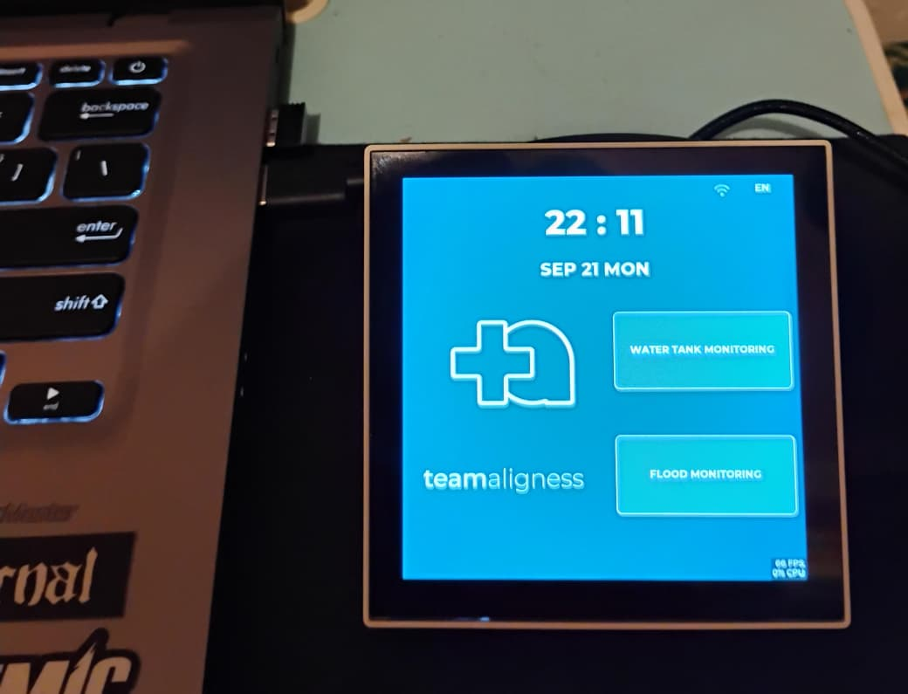
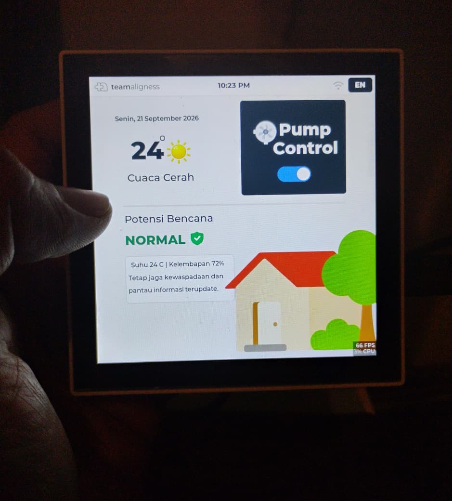
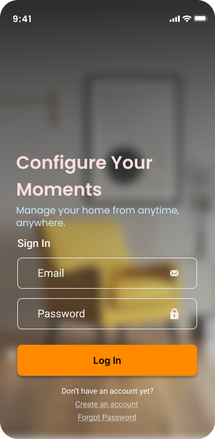

Background
Two things go wrong at my house.
When it rains hard, the porch floods, and someone has to drag out a water pump and drain it by hand. The second one is quieter but happens more often: there are two water tanks, and filling them means standing at the faucets and switching the flow from one tank to the other the moment the first one is full — and the only way to know it's full is to go and look.
Neither problem is hard. Both need someone to be physically present, paying attention, at the right moment.
The people at my house are my parents. They are old enough that "go outside during a rainstorm and set up a pump" and "climb up and check a tank, then switch a faucet" are not small requests.
That last sentence is the entire design brief. Not design a smart home interface. Design something my parents will actually use. And that immediately demoted the obvious answer.
The obvious answer is a phone app. It's cheaper, faster to build, and most IoT projects stop there. But an app assumes a user who will install it, keep it updated, remember which icon it is, and open it before they need it. My parents will not do that, and I don't blame them. What they will use is a thing on the wall that is always showing the answer, with buttons you press.
So the panel is the primary surface, and it is the one that shipped. The app still exists — I designed all 25 screens of it — but as a companion for the case where nobody is home, not as the thing my parents have to remember. That ordering is the whole argument, and the rest of this page is about both surfaces in that order.
The interface came first, and everything else was built to feed it.
My role, precisely
This is a team project and I want the boundary to be honest, because the interesting part of it is narrow and specific.
- I designed both interfaces. The wall panel — screen flow, layout, status vocabulary, colour and type system, interaction model, and the states each screen has to survive. And the mobile companion app in full: 25 screens across four flows. That is the work described below.
- I did not build the rest. The ESP32 firmware, the sensor nodes, the MQTT plumbing, the panel enclosure, and the LVGL implementation were built by the other members of Aligness — Dede Sopian on the board work and firmware support among them. The design was handed to them and implemented on the device.
So the questions I actually owned were: what does each operator see, in what order, at what size, and what does the screen say when the news is bad.
The constraints that shaped everything
A wall panel is not a phone. The differences are not aesthetic, they're physical, and they set every number in the design.
| Constraint | What it forced |
|---|---|
| Read from 1.5–2 m away, standing | Type large enough to read without leaning in; no paragraph anywhere on the dashboard |
| Glare from a window, plus a lit porch at night | High contrast, solid fills, no thin hairlines, no low-contrast grey-on-grey |
| Operated with a thumb, sometimes wet | Two destinations on the home menu, not a nav bar; large hit areas; no scrolling |
| Operators who will not read instructions | Every control shows its own current state; nothing has to be remembered |
| Colour vision is not guaranteed | Status is a word plus an icon plus a colour — never colour alone |
The two screens
1. Home menu — two doors, nothing else
The first screen is not a dashboard. It's a choice, and there are only two things to choose between: the water tanks, and the flood.

The reasoning, in order of how much it mattered:
- Two buttons, not a list. The system only ever answers two questions. A list of two is a list you have to read; two buttons are two targets you hit.
- Stacked and equal weight. No primary and no secondary, because which one matters more depends on the weather and the panel doesn't get to guess. Both are tall enough to hit with a thumb without aiming.
- Labels in plain words. Water Tank Monitoring and Flood Monitoring, spelled out at full size. No icons-only tile, no abbreviations, no house-shaped glyph to decode.
- One saturated colour, used as identity. The whole screen is a single cyan field with white cards on it. From across the room you recognise the screen before you read a word of it — and it looks nothing like the white dashboard, so you always know which screen you're on.
- Time and date always visible. Top right, unmissable, because the panel is mounted where a clock would otherwise be. A device that's useful when nothing is wrong is a device that stays plugged in.
- No settings, no history, no graphs. Every one of those is a thing that can be pressed by mistake.
2. Flood screen — one glance, one verdict

This is what the FLOOD MONITORING button opens. The layout reads top-left to bottom-right in the order the household actually thinks:
- What day is it. Orientation before information.
- What's the weather. 24°, clear, with the condition written out — this is the input that predicts the flood, so it sits above the verdict.
- The pump switch. The only control on the screen, in a dark card so it separates from everything else, showing its own state as a physical-looking toggle. If it's on, you can see it's on from the doorway.
- Potensi Bencana — NORMAL. The verdict. One word, in green, with a shield-check icon, and a short advisory line under it that names the numbers behind it: 24 °C, 72% humidity, keep watching.
The word choice matters more than it looks. Potensi Bencana — disaster potential — rather than Status Banjir, because the panel is making a forward-looking claim, not reporting a current condition. "Normal" is a verdict; "0 cm" would be a measurement the operator has to interpret.
The house illustration is doing work too, and it's the one place I'd expect a designer to disagree with me. It's decorative — it does not change with the water level. What it buys is a shape the eye lands on first and reads as home, so the verdict next to it is about the house rather than about a sensor. On a screen with no other imagery, it's also the thing that makes the panel feel like an appliance instead of a debug console.
What it doesn't do is scale to a bad state. There is no flooding version of that illustration yet, which is exactly the kind of gap that shows up the first time the screen has to say something urgent.
Decisions I'd defend
| Question | Decision | Why |
|---|---|---|
| How does someone reach the tank screen? | One oversized button on a menu | Nothing to learn, nothing to scroll, nothing to mis-hit |
| How is status read from across the room? | Word + colour + icon, never a chart | "NORMAL" with a green shield resolves faster than any graph at 2 m |
| Where does weather go? | Above the verdict, same size as the pump card | Rain is the cause; the risk reading is the effect. Cause first. |
| How is the pump driven? | A toggle that always shows its own state | The one irreversible action in the system should look like a light switch, not a menu item |
| What language? | Indonesian for the operators, an EN pill for demos | The people who live with it read Indonesian; visitors and reviewers don't |
| What is deliberately absent? | History, graphs, per-tank detail, settings | Every extra widget is paid for in glanceability, and the operators will never use it |
What I'd change next
Writing this down honestly is more useful than a clean screen.
- The two screens disagree about language. The home menu is entirely English — WATER TANK MONITORING, FLOOD MONITORING, SEP 21 MON — while the flood screen is Indonesian (Cuaca Cerah, Potensi Bencana, Senin, 21 September 2026) with English leaking through on Pump Control. The EN pill in the corner implies a switch that doesn't actually flip everything. For an operator who reads one language, that's two vocabularies to learn for one device. First thing I'd fix: one language per build, and the pill switches all of it or none of it.
- The FPS and CPU readout is still visible. Bottom right, in the shipped screenshots. Useful during development, wrong on a wall — it's the only text on the panel that a household member cannot act on.
- There's no visible automatic/manual mode. The pump switch implies manual control, but the system also starts the pump on its own, and the operator has no way to see which mode they're in. That's a state the interface owes the user and currently doesn't pay.
- Alerting isn't designed on the panel. It can only tell you something if you're standing in front of it, which is the exact failure of the original problem. The app has a Messages screen that covers the case where nobody is home, but the panel itself still has no buzzer with a designed pattern — that is the missing screen on the wall, not in the app.
- The tank screen isn't captured here. It exists on the device and follows the same rules: level as a large number, the tank as a shape, and a state word. I'll add it when I have a clean photograph of it.
The second surface: the mobile app
The wall panel is not the whole design. The same system has a companion app, and it exists because the panel cannot do three things: it cannot follow you out of the room, it cannot show you what happened last Tuesday, and it cannot be configured without standing in front of it.
So the app is designed for a different person than the panel is. The panel is for my parents, who want a verdict and a switch. The app is for whoever maintains the system — schedules, device pairing, thresholds, history. Designing both made the split obvious, and it's the most useful thing I took from this project: one system, two users, two interfaces, and neither one should try to serve both.
What's in the file
25 screens, counted: nine for authentication, seven for the home and status cluster, five for device pairing, and four for settings. Every one of them is reproduced below.
| Flow | Screens | What it covers |
|---|---|---|
| Authentication | 9 — Splash ×2, Login, Buat akun, Selesai Buat akun, Lupa kata sandi, Selesai Lupa kata sandi, Konfirmasi kata sandi baru, Kata sandi baru selesai | Both password-recovery branches and their confirmation states, not just the happy path. A sign-up that ends in a dead end is the usual defect here. |
| Home & status | 7 — home, Messages, Profile, Edit profile ×2, Info sistem ×2 | The device dashboard, the event feed, the account screens, and a detail screen per tank/generator group. |
| Device pairing | 5 — Klik Add Device, Light, Light Name, Light Added, and the home screen with the device in place | A four-step pairing flow with its entry point drawn separately, because the entry point is a state on the home screen, not a screen of its own. |
| Settings | 4 — Settings, Setup Devices, Assistance, Settings with a confirm modal | The device list, help, and the destructive-action pattern. Logout gets Batal / Log out rather than a single button. |
One thing worth flagging about the set: eight of the twenty-five are modal states, not screens. The sign-up confirmation, the reset-link notice, the password-changed notice, the save confirmation, the logout prompt, and three steps of the pairing flow are all the same underlying screen with a card over it. I drew them as separate frames because that is how the state gets reviewed, but they are one screen each in the build — which is the honest way to count them if what you care about is how much work the app actually has to do.
Every screen
Exported straight from the file, grouped by flow. The captions are mine and say what each frame is doing, not what it looks like.
Authentication 9 frames





Home & status 7 frames


Device pairing 5 frames


Settings 4 frames


What the home screen does
The home screen is where the two surfaces meet, so it's the one worth describing — and the one place where I departed from the panel instead of copying it.
- The severity colour moved into the event feed. On the panel the colour lives on the status card, because the card is the status. On the phone the cards are device tiles — each one named, each one with a switch — so severity would have nowhere to sit. It sits on the Messages list instead: Tank 1 at 20% and Tank 2 at 15% are red, Surface Water at 75% is green, the closed door and the 10 W plug are amber. Same principle as Potensi Bencana, moved to the place where a person is actually scanning for what went wrong.
- Every message carries its own timestamp. "Apr 22, 2025, 15:25:00" under each entry in the feed. Out of the room, a value without a time is a guess, and the panel has no such problem because you can see whether it is raining.
- One control, styled like the panel's. The Tank Generator and Generator Water cards carry the same toggle as the panel's pump switch, with the same on/off affordance — so learning one teaches the other.
- Add Device is a permanent card. The empty slot is always visible rather than hidden in a menu, because the first thing a new owner does is pair something.
- The event feed is the panel's missing feature. Messages lists exactly what the panel cannot: "Tank 1 Water Level is 20%", "Door is closed", "Smart Plug Power is 10 W", each with a timestamp. This is the alerting path I flagged as undesigned on the panel, and it exists here.
Design decisions shared with the panel
| Decision | On the panel | In the app |
|---|---|---|
| How status is encoded | Word + colour + icon, on the status card itself | Colour-tinted rows in the event feed, each with a value and a timestamp |
| Primary action | The pump toggle, isolated in a dark card | The same toggle, same shape, same placement on the device card |
| Destructive actions | None on the panel, by design | Logout is the only one, and it gets a modal with Batal / Log out rather than a single button |
| Dark mode | Not applicable — always-on wall display | Not designed. All 25 frames are light; a dark variant for a phone used at night is the obvious next pass and is not in this set. |
What I'd fix in the app
- The language is mixed the same way the panel's is. The account flow is Indonesian — Buat akun, Lupa kata sandi, Konfirmasi kata sandi baru — but the sign-up screen is titled Sign up, every device card reads in English, and the timestamps are English. It's the same defect as the EN pill on the panel, and the same fix: pick one language per build.
- Nothing on the home screen says how old the data is when the link is down. Every card shows a timestamp, but a stale card and a live card look identical. A disconnected state — greyed card, "last seen 4 h ago" — is the missing state.
- There's no history screen. The messages list is an event log, not a trend. A tank level over a week is what tells you a float sensor is drifting, and that screen doesn't exist yet.
- The app monitors devices the panel does not. Home has cards for a door sensor and a smart plug; the panel only knows two tanks and the porch. Either those devices exist and the panel should show them, or they do not and the app is advertising hardware the system cannot talk to. I would settle that before the app ships, because it is the difference between a companion and a second product.
- The app and the panel have no shared token file. The colours match because I matched them by eye. They should come from one source, and that's the first thing I'd set up if this went past a design exercise.
Design source
The mobile app lives in one Figma file — all 25 screens across the four flows, with the frames grouped by flow. The panel screens were built directly in LVGL, matching the same colours and type by hand; the photographs further up are the shipped device.
Open the Figma file — Mobile Apps Smart Home Assistant →
The file is view-only for anyone with the link. It opens on the full canvas; the four flows read left to right, top to bottom, and every frame in this set is reproduced above.
Conclusion
Every decision on the panel traces back to a single fact about two people who were never going to open an app: the always-on display, the two-button menu, the oversized switch, the verdict instead of a graph.
And every decision on the app traces back to the opposite fact — that the panel only works when someone is standing in front of it. The app is what the system looks like from outside the house: same status words, same colours, same order, so a condition learned on the wall reads identically on a phone held in a queue somewhere.
It would have been faster to design only the app, and it would have been an unused app. The hardest constraint in this project was never the sensors or the radio — it was designing for people who did not ask for a smart home and do not want one. They want the porch dry and the tanks full. The app exists so that I, and whoever maintains this after me, can check on it without becoming the third person who has to walk outside.
The interfaces are the part I designed, and they are the part that decides whether any of the rest of it gets used.